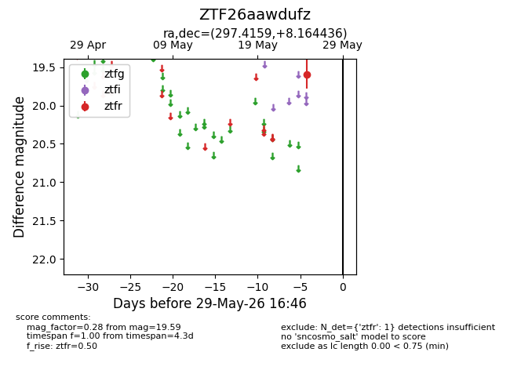
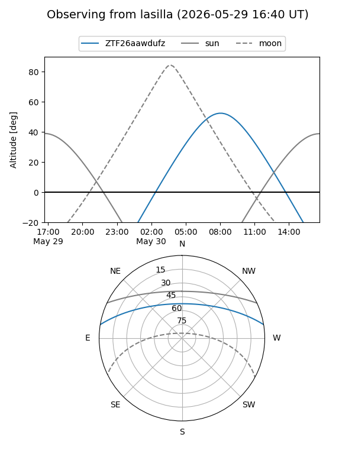
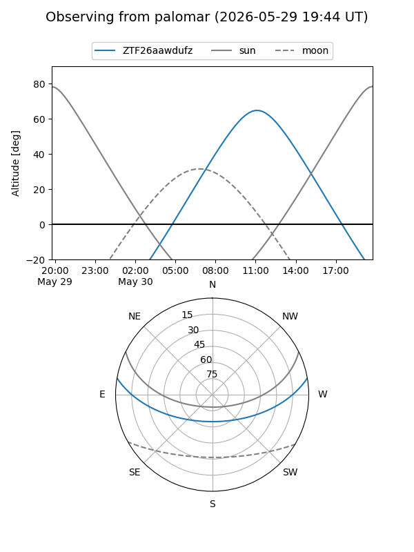

ZTF26aawdufz
Target ZTF26aawdufz at 2026-05-29 16:48
Aliases and brokers:
lsst-FINK: link
lsst-Lasair: link
lsst-ALeRCE: link
ztf-FINK: link
ztf-Lasair: link
ztf-ALeRCE: link
alt names
ZTF26aawdufz (ztf,fink_ztf)
Coordinates:
equatorial (ra, dec) = 297.4159,+8.16444
equatorial (HMS+DMS) = 19:49:39.81,+08:09:51.97
galactic (l, b) = (46.9857,-9.01308)
Flags:
Photometry:
last ztfr=19.59
1 ztfr detections
Lightcurve

Visibility


Additional plots